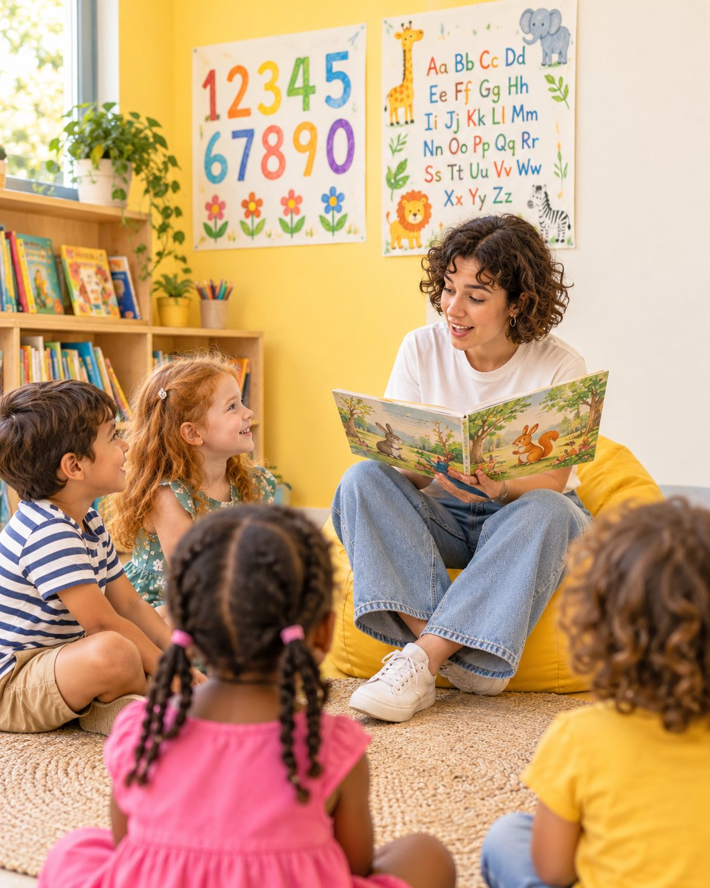
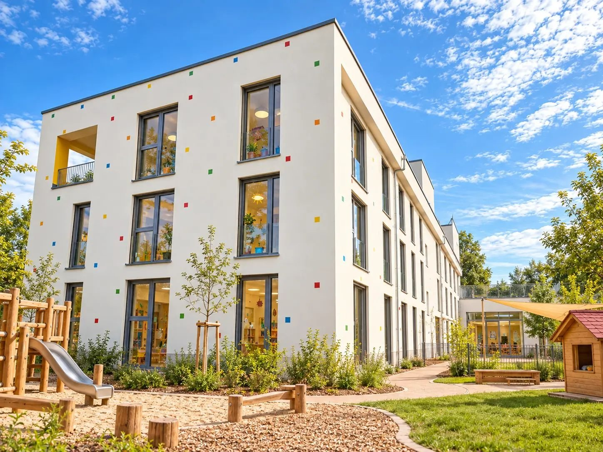
KI-VisualisierungWo kleine Entdecker groß werden!
Im Harzer Kiez in Neukölln entsteht eine neue Kita für 188 Kinder. Vielfältig, mehrsprachig und mittendrin. Eröffnung im Herbst 2027.
- 188 Kinder
- 16 Gruppenräume
- 3 Etagen
- 0–6 Jahre
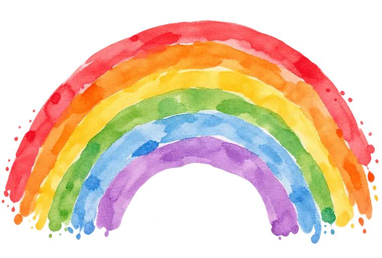
- 188 Kinder
- 16 Gruppenräume
- 3 Etagen
- 0–6 Jahre
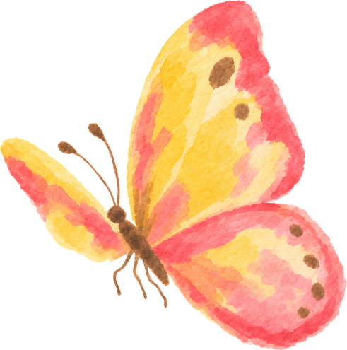
Ein Tag voller Entdeckungen und Geborgenheit!
Unsere Kita steht für Vielfalt und gelebte Mehrsprachigkeit. Wir begleiten Kinder dabei, ihre Fähigkeiten und Talente zu entdecken: spielerisch, mit allen Sinnen und gemeinsam.
Vielfalt & Mehrsprachigkeit
- Familiensprachen sind willkommen
- Mehrsprachige Bücher und Lieder
- Feste aus vielen Kulturen
Nachhaltige Bildung
- Pflanzen und ernten auf dem Dach
- Experimente mit Wasser und Energie
- Achtsam mit Mensch, Tier und Natur
Kunst, Musik & Bewegung
- Kunst-Werk-Raum und Musikraum
- Theater auf einer echten Bühne
- Bewegungsraum und Spielgarten
Geborgen von Anfang an
- Behutsame Eingewöhnung
- Kinderschutz im Mittelpunkt
- Mo–Fr 7:30–17:00 Uhr
Pädagogik
Der Situationsansatz bildet die Grundlage unserer pädagogischen Arbeit. Wir orientieren uns am Berliner Bildungsprogramm und greifen die Lebenssituationen, Erfahrungen, Interessen und Fragen der Kinder auf. Daraus entwickeln wir vielfältige Lern- und Erfahrungsangebote.
Kinder haben von Anfang an eigene Rechte und werden als aktive Mitgestalter*innen ihres Lernens ernst genommen.
Wir unterstützen sie dabei, ihre Umwelt zu entdecken, eigene Ideen einzubringen und ihre Fähigkeiten zu entfalten.
Unsere pädagogischen Fachkräfte begleiten die Kinder aufmerksam und gestalten Bildungsprozesse gemeinsam mit ihnen. Eine vertrauensvolle Elternpartnerschaft ist uns dabei besonders wichtig.
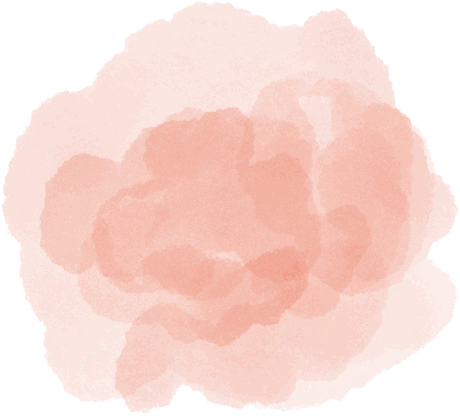
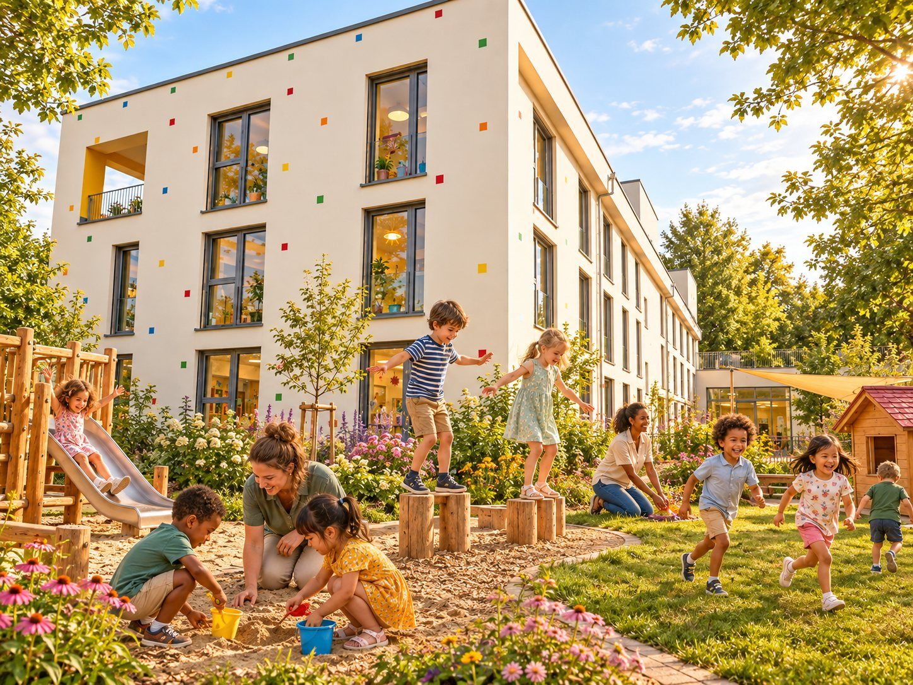
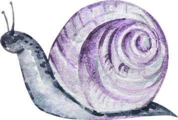
Inklusiv. Offen. Nachhaltig.
Familiensprachen bleiben nicht an der Kita-Tür.
Ihre Sprachen, Kulturen und Identitäten sind ein wertvoller Teil unseres Kita-Alltags. Wir greifen Wörter aus den Familiensprachen auf, singen Lieder, entdecken mehrsprachige Bücher und feiern Feste aus verschiedenen Kulturen. Eltern sind herzlich eingeladen, ihre Sprachen und Traditionen einzubringen.
Mehrsprachigkeit ist auch in unserem Team fest verankert. Unterschiedliche Sprachkenntnisse, zum Beispiel Türkisch und Arabisch, werden aktiv in den Kita-Alltag eingebunden. So erleben Kinder Vielfalt als Stärke und erfahren, dass sie mit ihrer ganzen Persönlichkeit willkommen sind.
Nachhaltigkeit, die man anfassen kann.
Auf unserer großen Dachterrasse pflanzen, pflegen und ernten wir gemeinsam mit den Kindern. Durch Experimente mit Wasser und Energie sowie Gespräche über Konsum und einen bewussten Umgang mit Lebensmitteln entdecken sie, wie Nachhaltigkeit im Alltag gelebt werden kann. Die Kinder bringen ihre eigenen Ideen und Fragen ein und gestalten Projekte aktiv mit.
Wir achten auf Recycling, einen bewussten Umgang mit Wasser und Energie sowie die sorgfältige Auswahl unserer Materialien. Dabei sind wir pädagogischen Fachkräfte Vorbilder: Wir leben Nachhaltigkeit vor und fördern Wertschätzung, Verantwortungsbewusstsein und einen respektvollen Umgang mit Mensch, Tier und Natur.
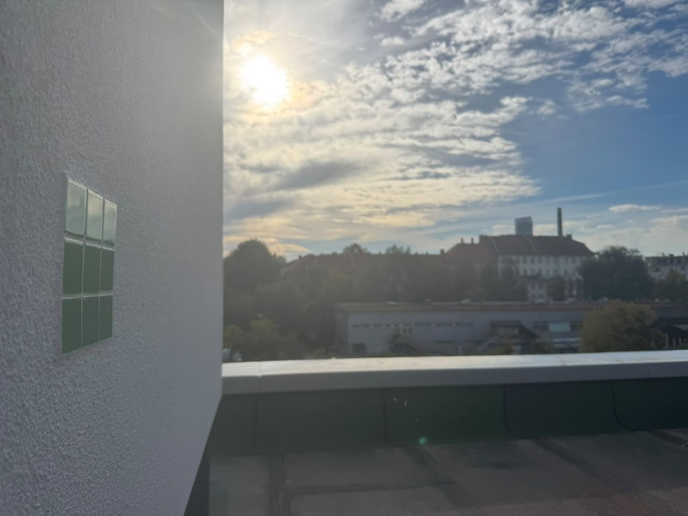
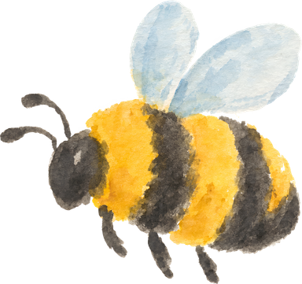
Diese Bildungsbereiche sind ganzheitlich und interdisziplinär ausgerichtet. Durch bereichsübergreifende Lernerfahrungen eröffnen wir den Kindern vielfältige Möglichkeiten, sich kreativ auszudrücken, mit allen Sinnen zu lernen und ihre Fähigkeiten ganzheitlich zu entwickeln.
Kunst
Kinder drücken ihre Eindrücke und Fantasien kreativ aus. In unserem Kunst- und Werkraum experimentieren sie mit vielfältigen Materialien und entdecken beim Malen zu Musik neue Ausdrucksmöglichkeiten. Projekte mit Kunstpädagog*innen und der Mandarie Kunstschule erweitern ihre kreativen Erfahrungen.
Musik & Theater
Im Musikraum entdecken die Kinder Instrumente, Klänge und Rhythmen. Gemeinsames Musizieren und Projekte fördern Kreativität, Sprache und soziales Miteinander. Im Theaterspiel erfinden die Kinder Geschichten, schlüpfen in Rollen und entwickeln kleine Aufführungen. Die Bühne im benachbarten Gemeindezentrum bietet ihnen Raum, diese vor Publikum zu präsentieren und ihr Selbstvertrauen zu stärken.
Bewegung
Kinder erschließen sich ihre Welt durch Bewegung und sammeln dabei wichtige Körper- und Sinneserfahrungen. In unserem Bewegungsraum und Spielgarten schaffen wir vielfältige Möglichkeiten, motorische Fähigkeiten, Körperwahrnehmung und Selbstvertrauen zu entwickeln. Durch kreative Bewegungsangebote, Tanzspiele und gemeinsame sportliche Aktivitäten fördern wir zudem das soziale Miteinander und die Freude an Bewegung.
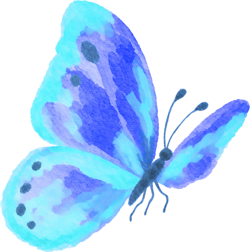
Hier wächst etwas Schönes.
Wir nehmen euch mit auf die Baustelle: echte Einblicke in das Haus, in dem bald gespielt, geforscht und gelacht wird.
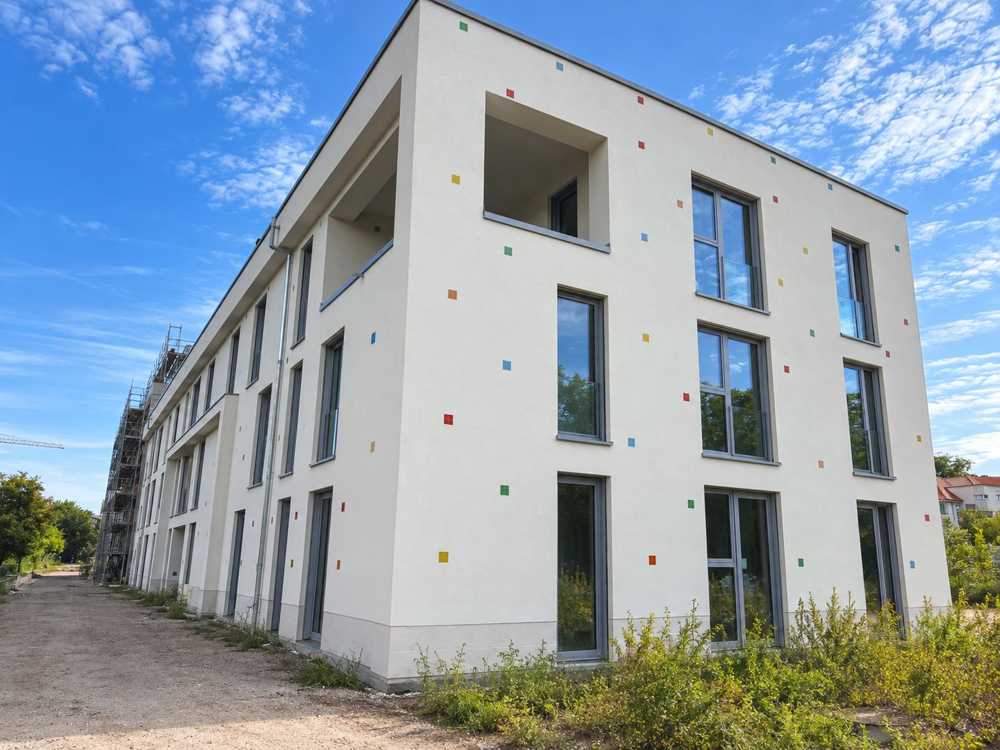
Unsere bunte Fassade
Echte Bauaufnahme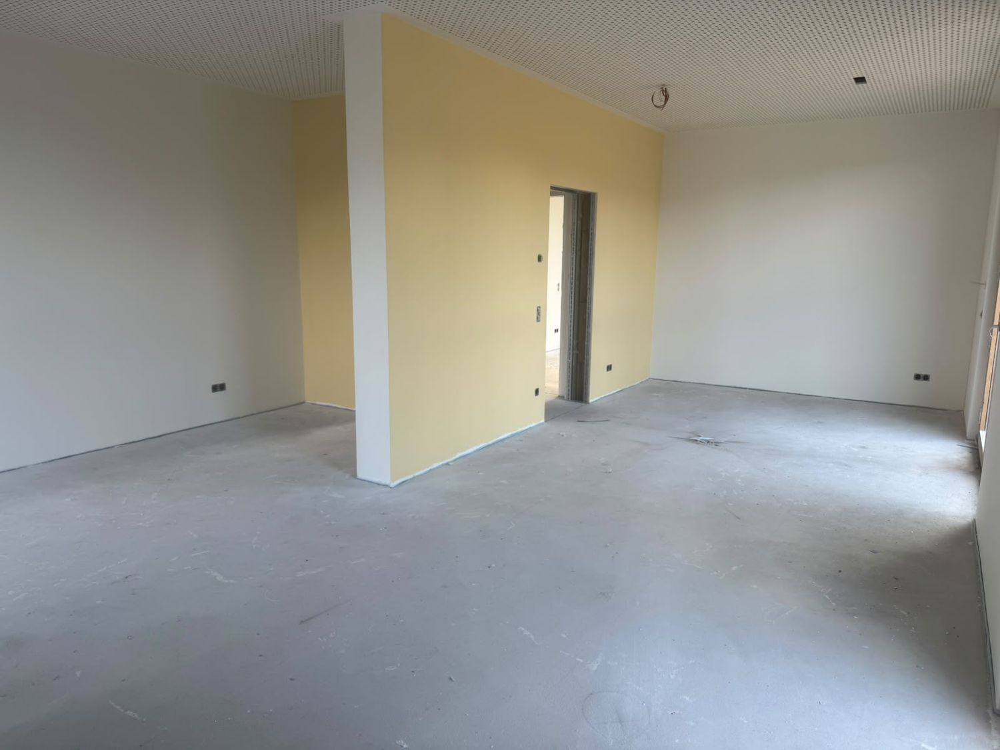
Gruppenraum in Sonnengelb
Echte Bauaufnahme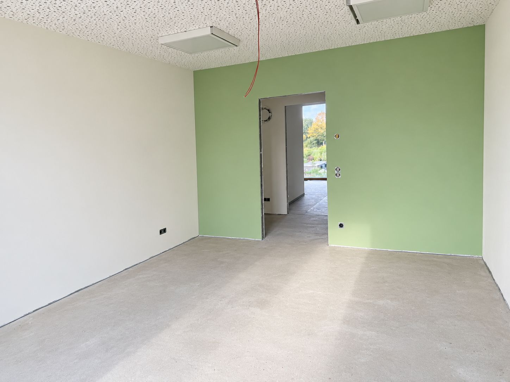
Gruppenraum in Blattgrün
Echte Bauaufnahme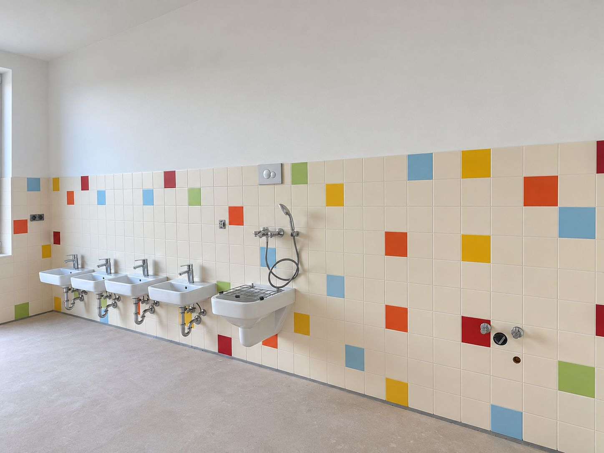
Bunte Fliesen im Waschraum
Echte Bauaufnahme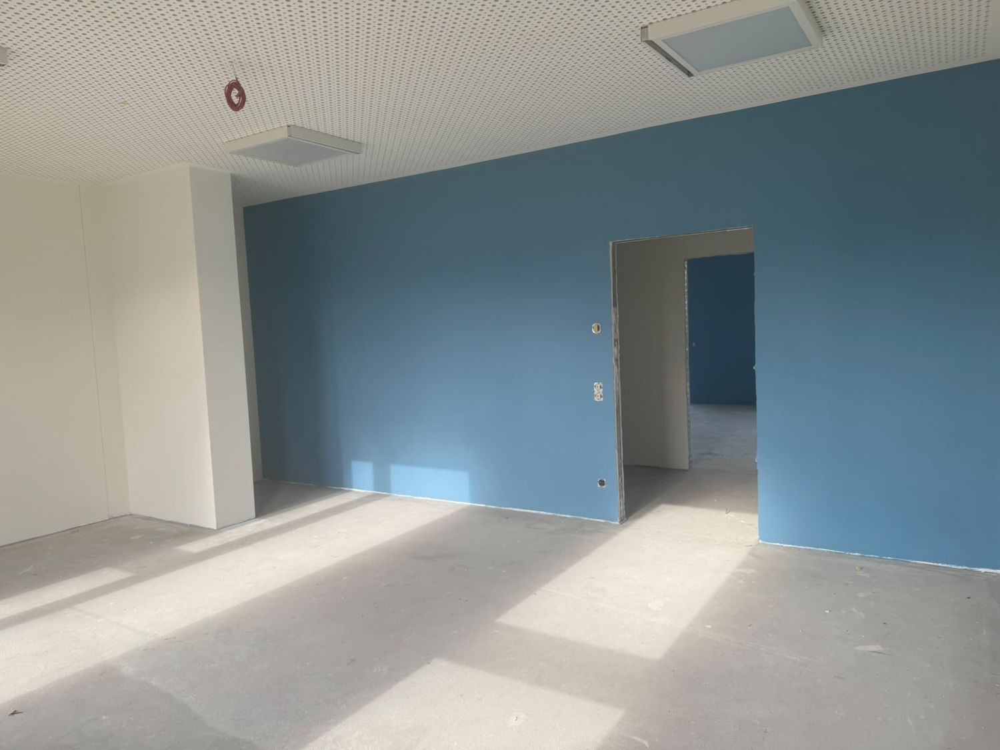
Gruppenraum in Himmelblau
Echte Bauaufnahme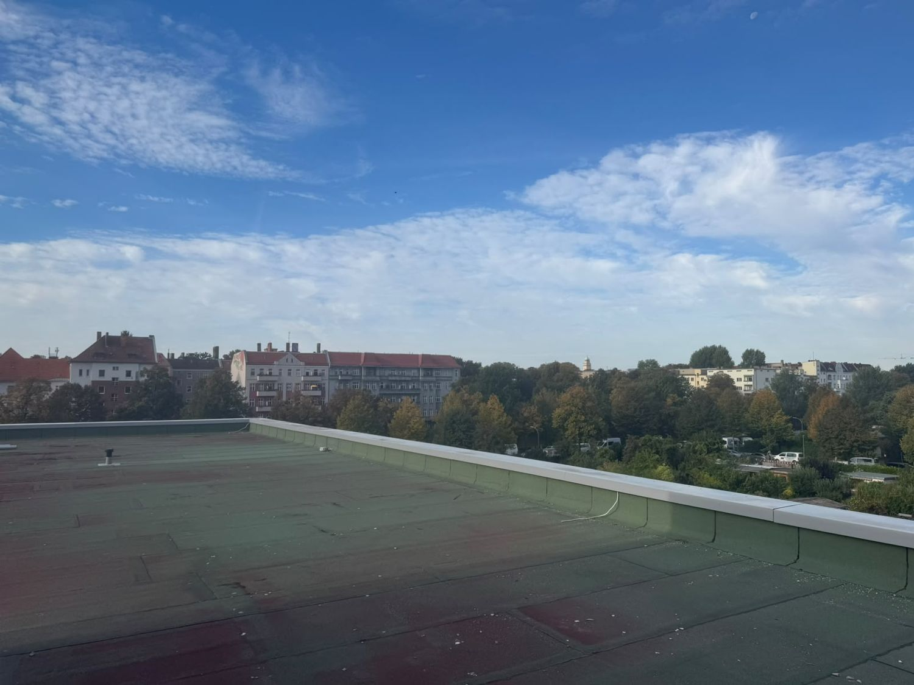
Blick von der Terrasse
Echte Bauaufnahme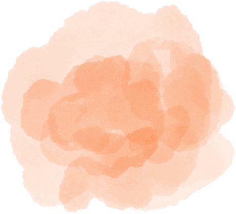
KI-VisualisierungWas Eltern uns oft fragen.
Wann öffnet die Kita?
Wir planen die Eröffnung für Herbst 2027. Über die Warteliste halten wir Sie auf dem Laufenden.
Was kostet ein Platz?
In Berlin ist die Kita-Betreuung beitragsfrei. Sie brauchen einen Kita-Gutschein, den Sie beim Jugendamt beantragen. Für das Essen kann ein kleiner Eigenanteil anfallen.
Welche Sprachen werden gesprochen?
Deutsch ist unsere gemeinsame Sprache. Familiensprachen sind ausdrücklich willkommen, im Team sprechen wir zum Beispiel auch Türkisch und Arabisch.
Was gibt es zu essen?
Ausgewogen und kindgerecht. Alle Mahlzeiten sind halal, vegetarische Optionen gibt es immer.
Wie bekommt mein Kind einen Platz?
Setzen Sie Ihr Kind unverbindlich auf unsere Warteliste. Wir melden uns, sobald die Platzvergabe beginnt.
Räume für kleine Entdecker
Auf drei Etagen entsteht Platz zum Spielen, Bewegen, Musizieren, Gestalten und Forschen. Und Orte zum Ausruhen. So könnte es bei uns aussehen.
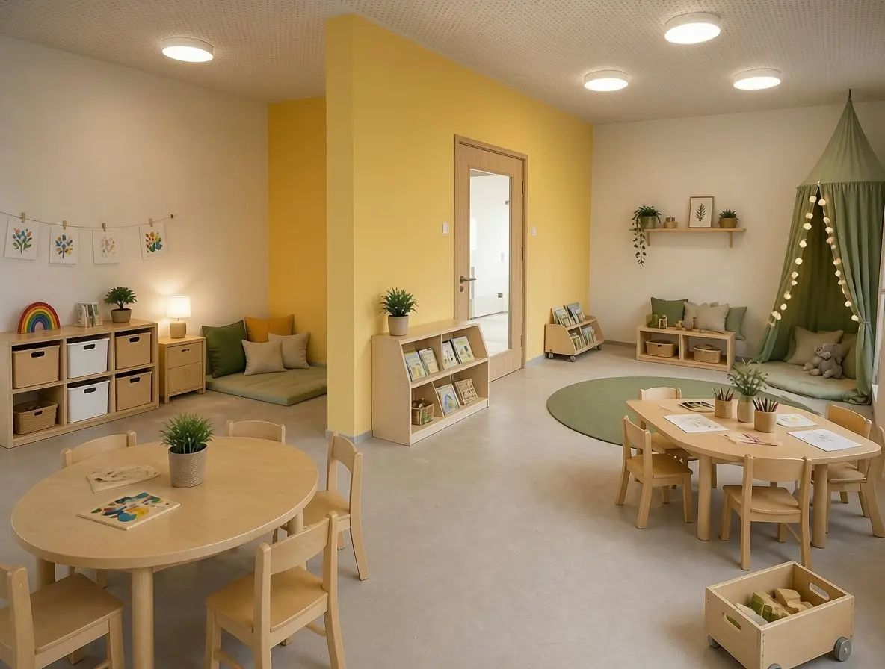
16 Gruppenräume
Ein Zuhause für jede Gruppe
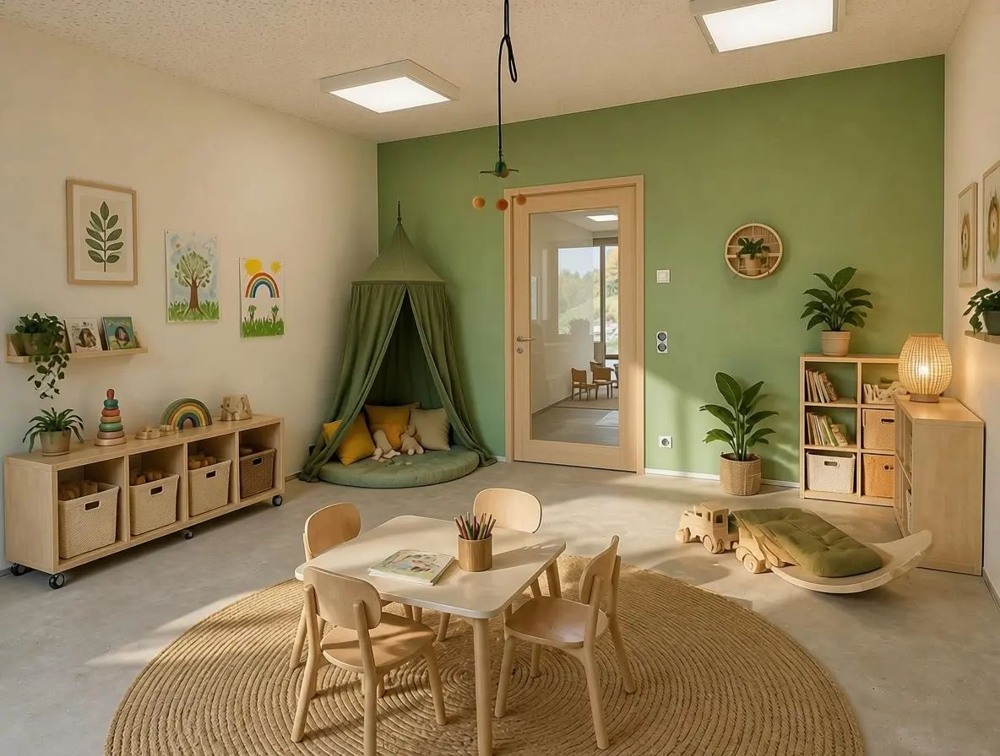
Kinderbibliothek
Mit einer Ruhe-Ecke
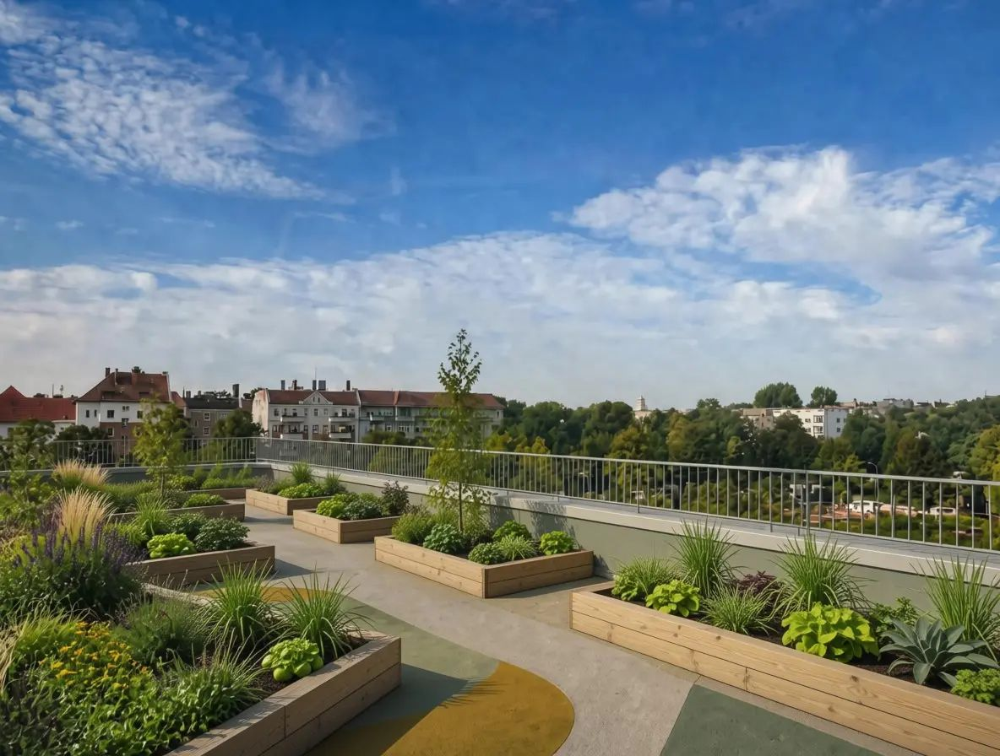
Dachterrasse & Spielgarten
Pflanzen, ernten, draußen sein
Außerdem: Bewegungsraum, Musikraum und Kunst-Werk-Raum. Die Bilder sind KI-Visualisierungen unserer Ideen.
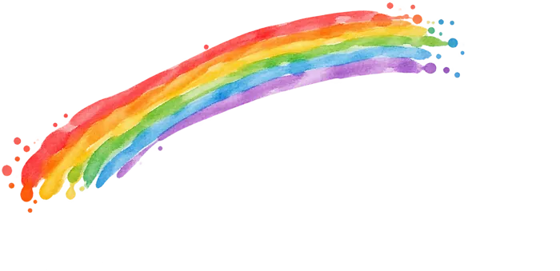
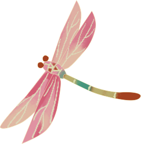
Behutsam ankommen.
Wir gestalten die Eingewöhnung behutsam und orientieren uns am individuellen Tempo und den Bedürfnissen des Kindes und seiner Familie.
Je sicherer das Kind ist, desto mutiger wird es, Beziehungen zu anderen Menschen einzugehen.In Anlehnung an Gerald HütherNeurobiologe und Autor
- Zeit und VertrauenDurch ein persönliches Kinderprofil lernen wir bereits vor der Eingewöhnung die Sprachen, einige Wörter in der Familiensprache, Vorlieben, Gewohnheiten etwa beim Schlaf und Essen und individuellen Bedürfnisse des Kindes kennen. So können wir vertraute Anknüpfungspunkte schaffen und den Start individuell und geborgen gestalten.
- KennenlernenIhr Kind entdeckt Raum und Bezugsperson, Sie sind dabei.
- Kurze Zeiten alleinErste kleine Abschiede, so lange wie es sich gut anfühlt.
- Ganz angekommenIhr Kind fühlt sich sicher und bleibt den ganzen Tag.
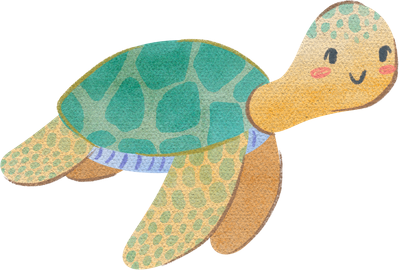
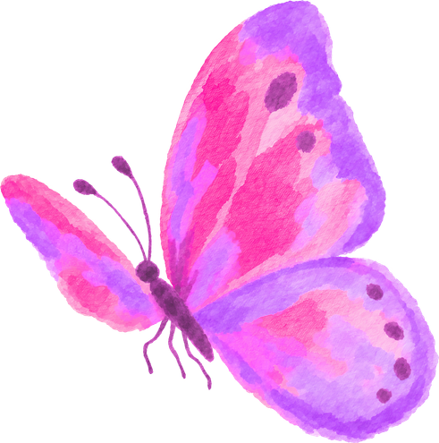
Neue Entwicklungsphasen
Wir begleiten die Kinder beim Wechsel in einen neuen Altersbereich.
Gut vorbereitet auf die Schule
Wir gestalten den Übergang von der Kita in die Schule bewusst und stärken die Kinder für ihren nächsten Lebensabschnitt.
Kinderschutz
Schutz und Wohl der Kinder stehen im Mittelpunkt unserer pädagogischen Arbeit und sind fester Bestandteil unseres Alltags.
Kinderschutz-Konzept (folgt)Wie sieht ein Tag bei uns aus?
Feste Rituale geben Sicherheit. Dazwischen bleibt viel Raum für eigene Ideen, Mitbestimmung und Begegnungen.
Ankommen
Ein Hallo für jedes Kind
Frühstück & Spiel
Gemeinsam in den Tag
Entdecken & Gestalten
In den Funktionsräumen
Draußen & Bewegung
Garten und Dachterrasse
Essen & Ruhe
Mittagessen, schlafen, lesen
Abholen
Erzählen, was heute war
Gesund essen und mitgestalten.
Wir bieten eine ausgewogene, kindgerechte Verpflegung. Alle Mahlzeiten sind halal, vegetarische Optionen gibt es immer. Auf der großen Dachterrasse pflanzen, pflegen und ernten wir gemeinsam mit den Kindern.
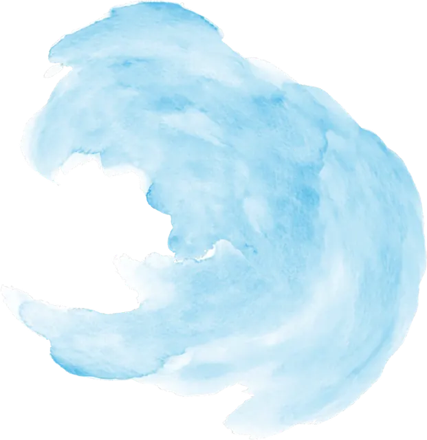
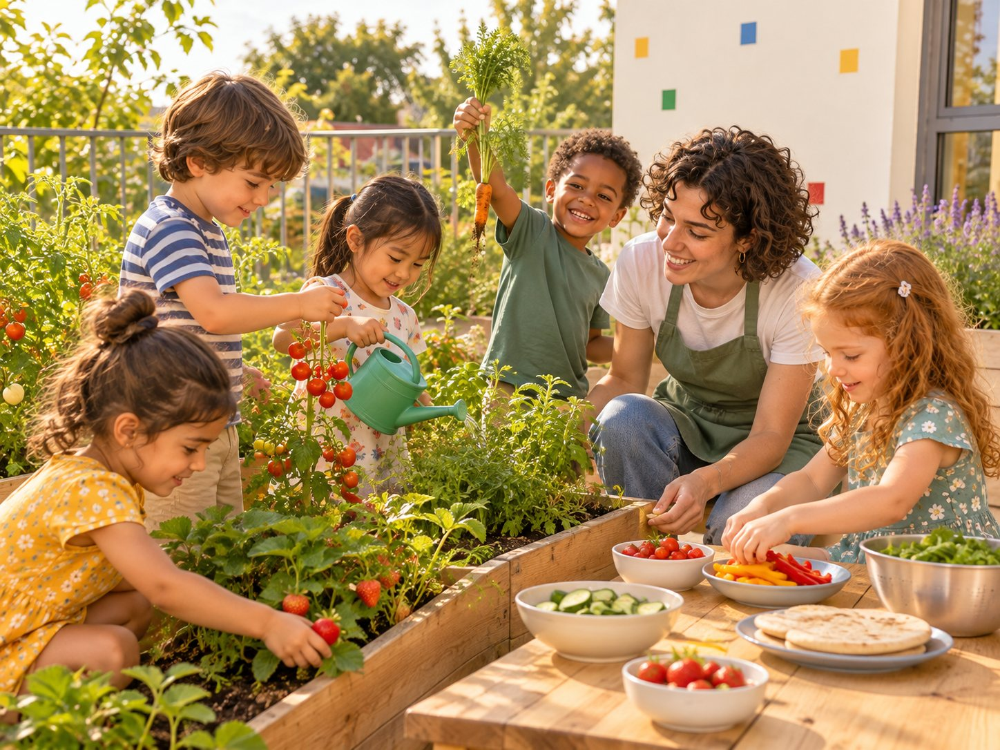
Gemeinsam mit euch
Eltern und Familien sind unsere wichtigsten Bildungspartner*innen.
Im Austausch
Gespräche & ElternabendeEntwicklungsgespräche, Elternabende und der tägliche Kontakt beim Bringen und Abholen.
Mitwirken
Sprachen & TraditionenBringen Sie Ihre Sprachen, Lieder und Feste ein. Wir informieren verständlich und kultursensibel.
Elternbeirat
MitbestimmenDer Elternbeirat vertritt die Interessen der Familien und gestaltet die Kita aktiv mit.
Ein Platz zum Großwerden.
Merken Sie Ihr Kind unverbindlich vor. Es dauert etwa drei Minuten.
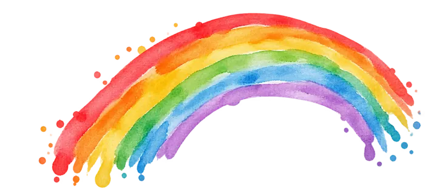
Danke! Wir melden uns.
Ihr Kind steht jetzt auf unserer Warteliste. Eine Bestätigung kommt per E-Mail.
Vorschau: In dieser Version wird nichts gesendet. Die Empfänger-Adresse folgt.